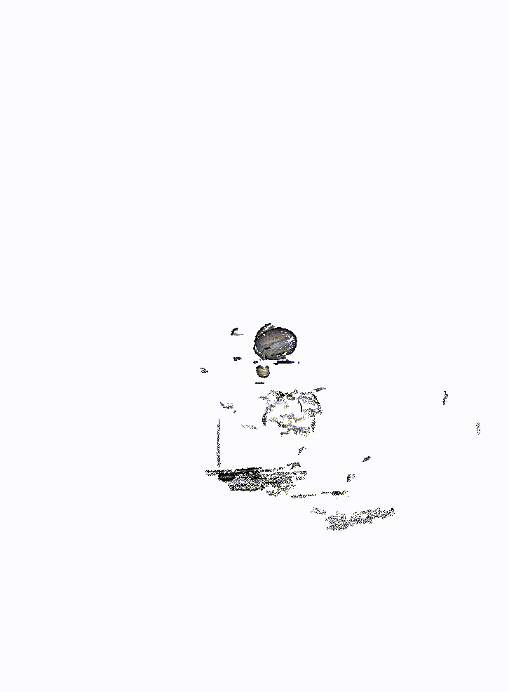
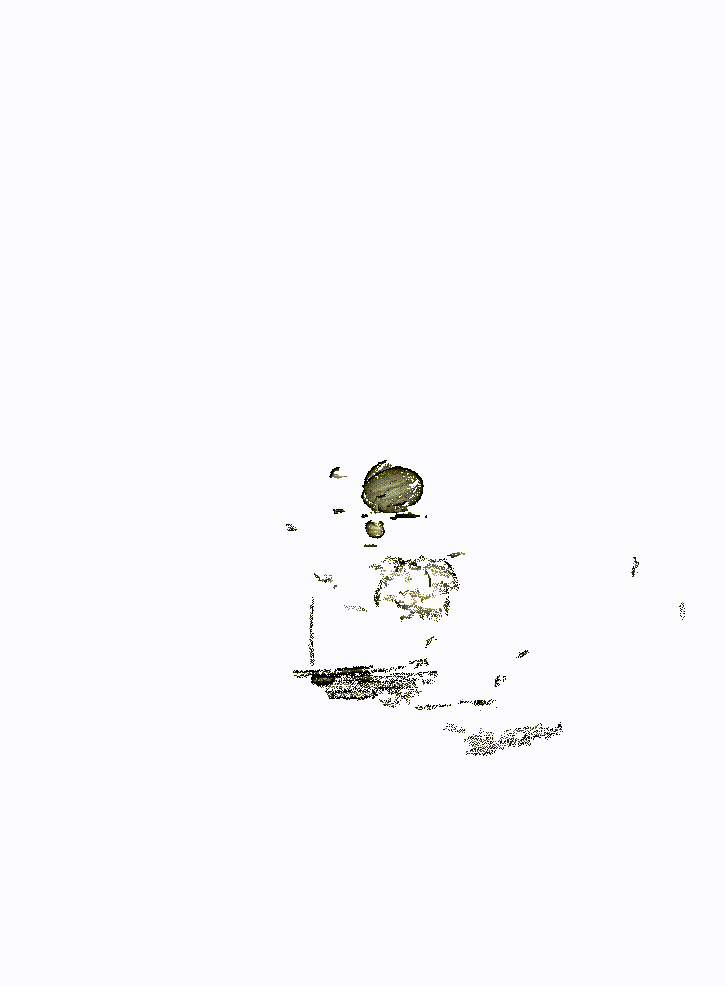
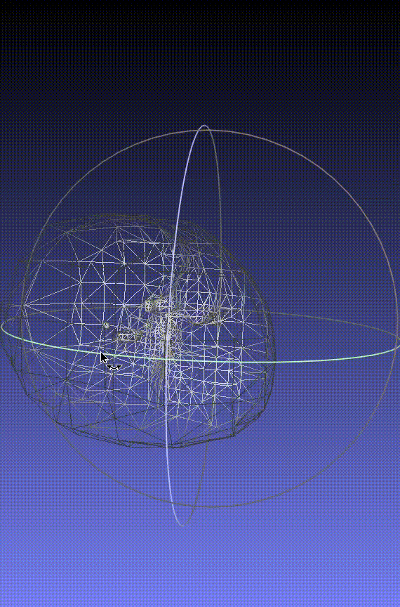
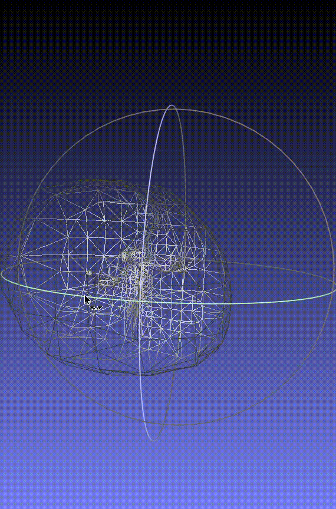

Computer Vision Experiments in Crowdsourced Astronomy
Rasmi Elasmar
re2300@columbia.edu
Figure 1: Sparse (top) and dense (bottom) reconstructions of Jupiter.
 

Figure 2: A point cloud reconstruction with normal vectors attached to each point (top), and its resulting mesh reconstruction (bottom). The spherical shape of Jupiter from the projected images is evident, but the shape of the mesh is imperfect.
 
